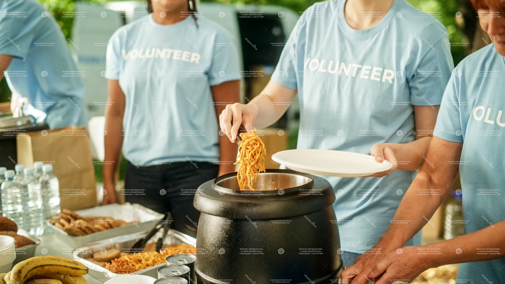
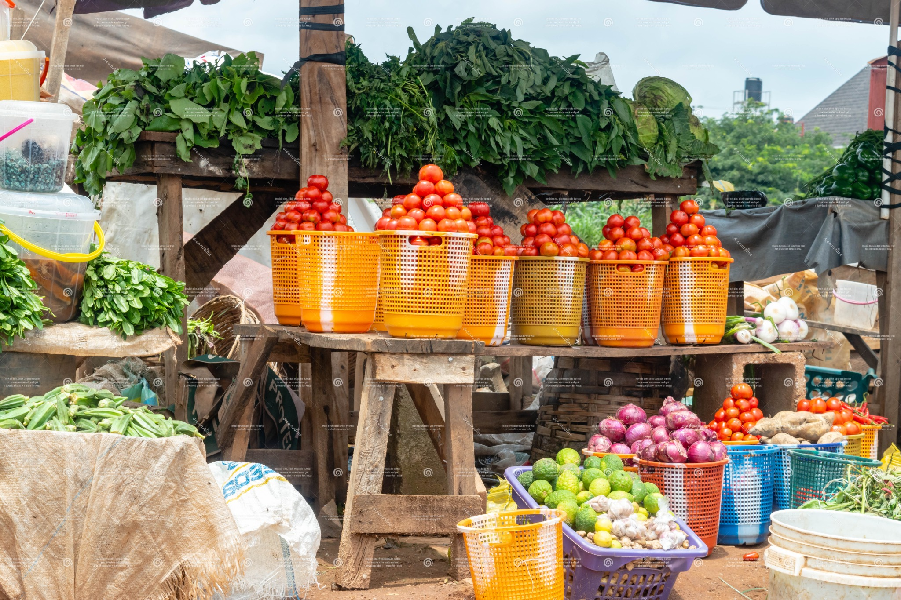
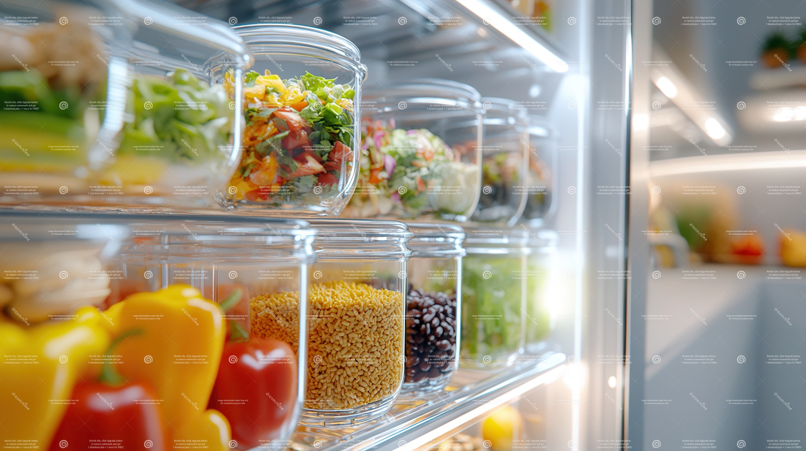

Skip to content
Team 1 · MNJ's Kitchen
Simple steps for stronger local food systems

Volunteer
- Find roles that match your schedule
- Support food banks and community kitchens
- Invite a friend to double impact

Buy Local
- Seasonal produce supports local growers
- Shorter supply chains reduce waste
- Keep dollars in your community

Cut Waste
- Plan meals and store food properly
- Label leftovers with a date
- Freeze portions you will not eat soon